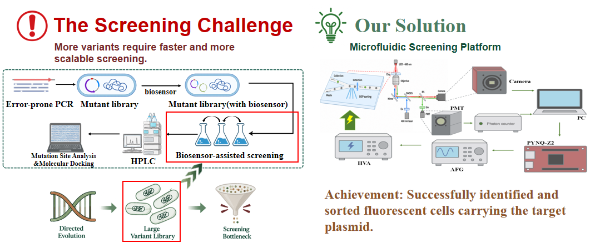
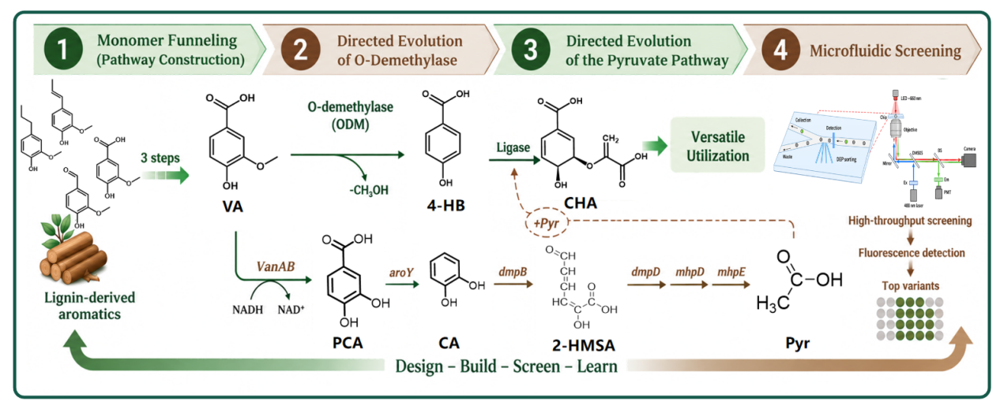
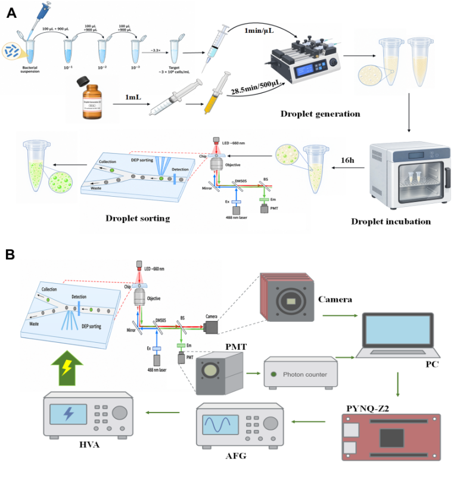
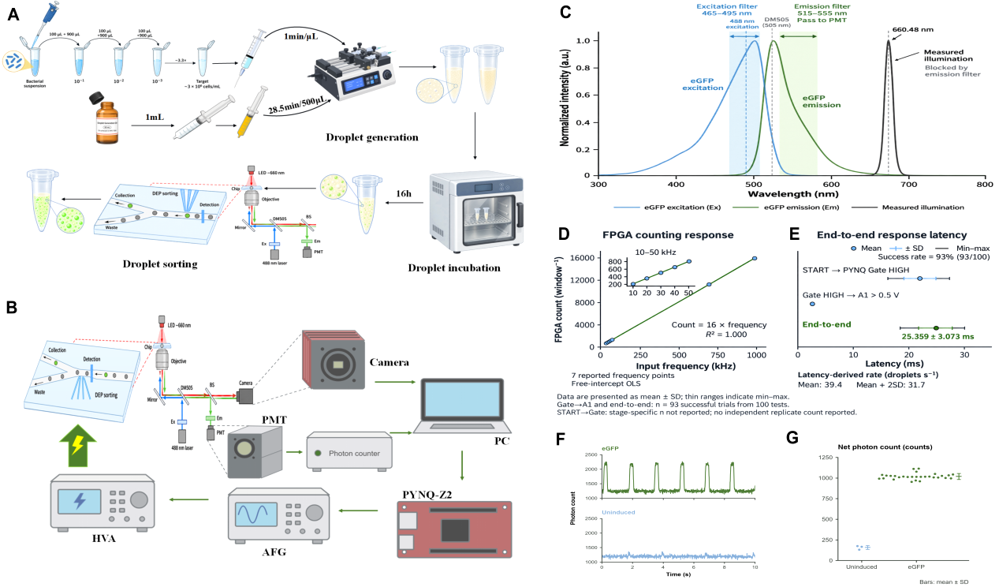
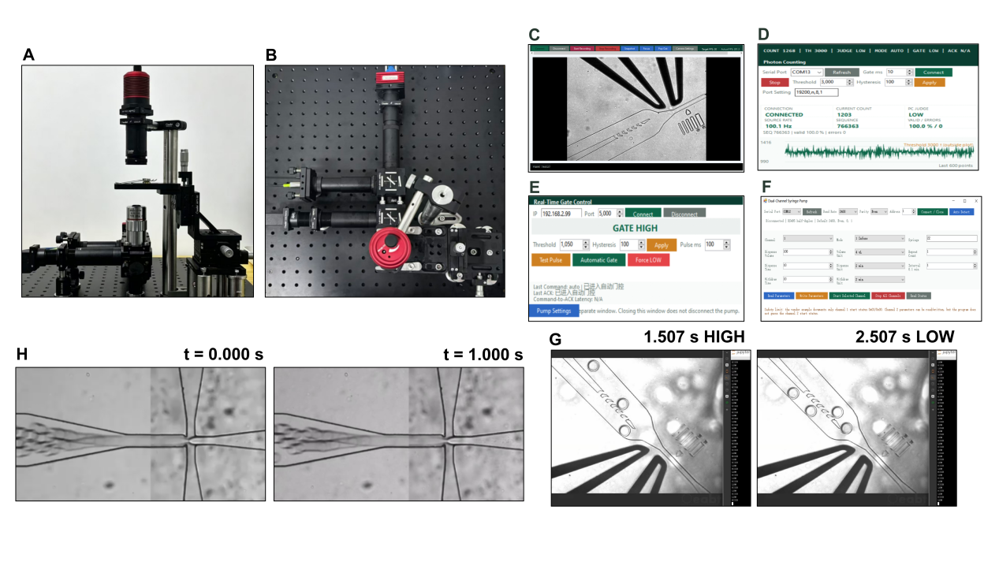

Part 1:Background
1.1 The Screening Challenge
Our directed-evolution target is the enzyme that catalyzes the O-demethylation of vanillic acid (VA) to produce 4-hydroxybenzoic acid (4-HB). Improving this enzyme first requires generating a large-scale mutant library and then identifying variants with higher catalytic activity from the vast pool of candidates. The challenge lies not in generating diversity but in rapidly finding rare, valuable variants among the enormous number of candidates. As library size grows, the conventional clone-by-clone screening approach becomes progressively less efficient.
1.2 Limitations of Conventional Screening Methods
The conventional route involves test-tube screening followed by HPLC quantification of 4-HB:
Long screening cycles
High reagent consumption
Low effective throughput
This approach is not unusable; it simply lacks the throughput needed for large-scale mutant libraries. The bottleneck grows with library size, so what limits the speed of directed evolution is not the “generation of mutations” but the “screening” step.

Part 2:Design
2.1 Droplet Microfluidics
The difficulty of directed evolution lies not in generating mutations but in rapidly identifying highly active variants from a large pool of mutants. To overcome the throughput limitations of test-tube screening and HPLC, we employ droplet microfluidics: individual mutant cells are encapsulated into water-in-oil droplets, so that each droplet becomes an independent microreactor carrying out the VA → 4-HB → CHA conversion in parallel. PobR/mCherry fluorescence is then used to convert enzyme activity into a measurable optical signal, with a photon detector reading each droplet in real time, followed by dielectrophoretic high-throughput sorting of positive droplets. In this way, “clone-by-clone chemical analysis” is transformed into “single-droplet fluorescence sorting,” enabling selection of the best-performing mutant strains.

2.2 Fluorescence Detection
We need fast, real-time readouts at the single-droplet level. Because 4-HB within a droplet is not readily measurable by direct optical means, we convert the chemical signal into a fluorescence signal that can be detected online: an intracellular PobR biosensor senses 4-HB and in turn drives mCherry expression.
The origin of this information chain is the enzyme variant—cells encapsulated within droplets use vanillic acid (VA) as the substrate and generate 4-HB through O-demethylation. The higher the catalytic activity of the enzyme variant, the more 4-HB accumulates within the droplet and, ultimately, the stronger the mCherry fluorescence. The complete chain is: enzyme variant → 4-HB production → PobR response → mCherry expression → fluorescence intensity → sorting decision. A photomultiplier tube (PMT) combined with photon counting converts the fluorescence of each droplet into an interpretable electrical signal in real time.
2.3 DEP Sorting
Detection alone is not sufficient. If positive droplets can be identified but not automatically recovered, screening still requires manual intervention and throughput remains limited. It is detection combined with automated sorting that constitutes a complete high-throughput platform. We chose DEP because it acts on droplets through a non-uniform electric field without the need for mechanical valves, thereby avoiding the problems of mechanical inertia, pressure disturbance, and slow response. Detection and sorting therefore form a closed loop from identification to recovery, allowing screening to proceed without manual droplet-by-droplet handling.
2.4 Overall System Architecture
The complete workflow is: cell suspension → droplet generation → incubation → reinjection → fluorescence detection → signal processing → DEP sorting → collection/waste. Two parallel pathways must be distinguished: the fluidic pathway transports droplets from the generation chip to the detection region and then to the sorting junction (Figure A); the electronic-signal pathway follows PMT → comparator/CH297 photon counter → FPGA → function generator → high-voltage amplifier → DEP electrodes, converting each fluorescence event into an electric field that alters the droplet trajectory (Figure B).

Part 3:Result
To address the screening bottleneck created by large mutant libraries[25–26], a hardware-assisted microfluidic platform was constructed, integrating droplet generation, fluorescence detection, photon counting, and dielectrophoretic (DEP) sorting[27].
3.1 Construction and Functional Validation of the Microfluidic
Screening Platform
Bacterial suspensions were diluted, encapsulated into water-in-oil droplets, incubated for 16 h, and introduced into the detection and sorting stage (Figure 4A). A camera provided droplet imaging, whereas the PMT converted fluorescence into photon counts. Signals were transferred through CH297 to the computer, and sorting commands were delivered through PYNQ-Z2, the function generator (AFG) and high-voltage amplifier (HVA) to the DEP electrodes (Figure 4B).
For eGFP detection, the optical path used 488 nm excitation with the indicated filters and DM505 (Figure 4C). FPGA counts increased linearly across seven tested input frequencies (N = 16f, R² = 1.000; Figure 4D). In 100 end-to-end electrical tests,93 responses were successful; their latency was 25.359 ± 3.073 ms (mean ± SD; Figure 4E). eGFP samples showed repeated high-count peaks and net counts near 1,000, whereas uninduced controls remained near the lower baseline and about 150 net counts (Figure 4F,4G). More importantly, the eGFP reporter can be replaced with mCherry, enabling direct integration of the platform with our biosensor-based screening workflow.

3.2 Low-Cost Hardware Integration and Self-Developed Control
Software
The physical platform was assembled and a dedicated control environment was developed (Figure 5A, 5B). The software contains camera observation, PMT photon counting, PYNQ gate control and syringe-pump fluid delivery modules (Figure 5C–F). Photon counts are read through CH297, evaluated using a threshold and hysteresis, and converted into HIGH/LOW commands for PYNQ; actuation then proceeds through AFG, HVA and DEP.
Operational videos provided direct visual validation. Representative sorting frames at 1.507 s (HIGH) and 2.507 s (LOW) show periodic gate-state switching (Figure 5G), while frames at 0 and 1s show continuous droplet formation (Figure 5H).

The eight listed hardware categories had an estimated total cost of CNY 61,851 (approximately £6.9k), with a recorded development period of three months. The estimate covers optics, imaging, detection, control and pumping hardware but excludes the PC, chips and consumables. Modules were designed to be replaceable and upgradable, and the control software and build guide are planned for public release through GitHub or another open repository.
| Component | Model | Cost (GBP) |
|---|---|---|
| HVA | ATA-2081 | 2,717.8 |
| Optics/optomechanics | — | 2,218.8 |
| Syringe pump | LSP02-3B | 741.8 |
| AFG | DG1022Z | 389.7 |
| Camera | MUS40M-G | 358.2 |
| PMT | H10682 | 281.9 |
| Photon counter | CH297 | 169.2 |
| FPGA | PYNQ-Z2 | 97.7 |
| Total | — | 6,975.0 |
Part 4: Supplementary Information
Table 1 · Hardware
| Name | Model/Specification | Brand/Vendor | Quantity | Function | Notes |
|---|---|---|---|---|---|
| Photomultiplier tube (PMT) | H10682-110 | Hamamatsu | 1 | Converts droplet fluorescence into electrical pulses | Positive pulse, ~10 ns typical pulse width, 50 ohm termination |
| Photon counter | CH297 | TUL | 1 | Gated PMT pulse counting | GATE = Pmod B Pin1 (JB1_P, ZYNQ W14); Pmod logic I/O 3.3 V |
| FPGA board | PYNQ-Z2 | Lingrui Zhijie Electronics | 1 | High-speed comparison and waveform shaping (early design) | Dual TLV3501; fixed threshold; 0.1 Hz-230 MHz; TTL output; +5 V single supply; later replaced by CH297 |
| High-speed comparator (early) | TLV3501 | Texas Instruments | 1 | Analog pulse shaping | Later replaced by CH297 |
| Function generator | ATA-7010 | RIGOL | 1 | Generates the DEP trigger waveform | DC-100 kHz; max output 2 kVp-p (+/-1 kVp); max output current 40 mAp; voltage gain x0-1000 |
| High-voltage amplifier | ATA-2081 | Aigtek | 1 | DEP high-voltage amplification | 8 kHz, 300-500 Vpp; rated ~800 Vp-p |
| Syringe pump | LSP02-3B | Ditron-tech | 1 | Aqueous/oil phase driving | Dual channel, USB-RS485 |
| Scientific camera | MUS40M-G | OsCam Vision | 1 | Observation and video recording | ~720 x 540, ~328 fps |
| Base optics (optical breadboard kit) | 488 nm laser, DM505, 535 nm emission filter, 660 nm LED, ND, etc. | Oeabt | 1 set | Fluorescence excitation/collection and bright-field observation | LED-D1-524 and filter kit pending(mCherry ) |
Table 2 · Consumables
| Name | Model/Specification | Brand/Vendor | Quantity | Function | Notes |
|---|---|---|---|---|---|
| Droplet generation chip | PDMS + glass | Custom/FluidicLab | As needed | Generates water-in-oil droplets | - |
| DEP sorting chip | PDMS + glass, sorting channel ~30 um | Custom/FluidicLab | As needed | Fluorescence detection and sorting | - |
| Oil phase (fluorinated oil) | 5 mL / 10 mL pack | Custom/FluidicLab | As needed | Continuous-phase carrier | - |
| Connection and filtration consumables (syringes, tubing, needles/connectors, filters) | Syringes fit LSP02-3B; tubing and needles/connectors fit chip ports; filters 0.22 um | - | As needed | Aqueous/oil infusion, pump-to-chip connection, chip-port connection, filtration to prevent clogging | - |
| Bacterial suspension | eGFP / mCherry engineered strains | In-house engineered strain | As needed | Droplet encapsulation target | - |
Open-Source Resources
All source code, control software, FPGA logic, build documentation, and example data are released openly to support reproducibility and community reuse. The Examples directory provides runnable demonstrations and configuration files for droplet detection, photon counting, DEP triggering, and device synchronization. Please refer to the repository for the latest build guide, wiring and operation instructions, and license information.
The open-source repository is available at:
https://yuancheng-nefu.github.io/NEFU-China-Open-Microfluidic-Platform/